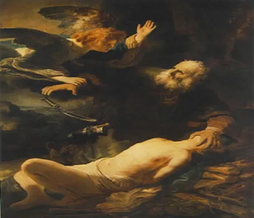

-
Pré-História - 30 mil anos atras
Este período abrange as primeiras manifestações artísticas conhecidas da humanidade, como pinturas rupestres, esculturas em pedra e artefatos cerimoniais. As pinturas rupestres, encontradas em cavernas por todo o mundo, retratam principalmente animais, cenas de caça e rituais, revelando a relação dos primeiros humanos com o ambiente e a espiritualidade.
-
Antiguidade Clássica - sec VIII A.C
A arte grega é caracterizou a busca da perfeição e a representação do ideal humano. Na escultura, destacam-se as obras que celebram o corpo humano, como o Doríforo de Policleto. Na arquitetura, o templo grego é um símbolo marcante, com colunas dóricas, jônicas e coríntias. Já na arte romana, há uma influência da arte grega, mas com uma ênfase maior na grandiosidade e na representação do poder do Império.
-
Idade Média - sec V
Durante esse período, a arte é dominada pela igreja e pela religião, refletindo as crenças e valores da época. A arte bizantina é marcada por mosaicos elaborados e ícones religiosos, enquanto a arte românica se concentra em igrejas e mosteiros com arcos semicirculares e relevos esculpidos. O estilo gótico, posteriormente, é caracterizado por suas catedrais altas e luminosas, vitrais coloridos e esculturas ornamentadas.
-
Renascentismo - sec XV
O Renascimento marca um renascimento das artes e da cultura clássica, com uma ênfase no humanismo e no estudo da anatomia. Os artistas renascentistas buscam representar a realidade de forma mais precisa, utilizando a perspectiva linear e a proporção áurea. Grandes mestres como Leonardo da Vinci, Michelangelo e Rafael produzem obras-primas em pintura, escultura e arquitetura, refletindo um interesse renovado pelo conhecimento e pela beleza clássica.
-
Barroco - Final do Sec XVI
O Barroco é caracterizado pelo drama, pelo movimento e pela grandiosidade. Os artistas barrocos buscam impactar emocionalmente o espectador, utilizando contrastes de luz e sombra, cores intensas e composições dinâmicas. Caravaggio é conhecido por suas obras dramáticas e realistas, enquanto Bernini se destaca na escultura barroca, criando obras cheias de energia e movimento.
 -
Neoclassicismo - Sec XVIII
Surgindo como uma reação ao Barroco, o Neoclassicismo busca retornar aos ideais da Antiguidade Clássica, valorizando a simplicidade, a clareza e a racionalidade. Os artistas neoclássicos se inspiram na arte grega e romana, buscando equilíbrio e ordem em suas obras. Jacques-Louis David é um dos principais expoentes deste movimento, com suas pinturas históricas e políticas que celebram a virtude e a heroísmo.
-
Romantismo - Sec XIX
No século XIX, o Romantismo surge como uma reação ao Neoclassicismo, enfatizando a emoção, a individualidade e a natureza. Os artistas românticos exploram temas como o amor, a melancolia e a busca pela liberdade, muitas vezes em contraste com a industrialização e a urbanização crescentes. Eugène Delacroix e Francisco de Goya são representantes proeminentes deste movimento, com suas obras expressivas e emotivas.
-
Impressionismo - Final do Sec XIX
O Impressionismo, surgido no final do século XIX, revoluciona a arte ao retratar momentos fugazes da vida cotidiana, capturando a luz e a atmosfera através de pinceladas rápidas e cores vibrantes. Os impressionistas buscam representar as sensações visuais e emocionais do momento, ao invés de uma representação precisa da realidade. Claude Monet, Pierre-Auguste Renoir e Edgar Degas estão entre os principais artistas impressionistas, cujas obras influenciaram profundamente o desenvolvimento da arte moderna.
-
Modernismo - Inicio do Sec XX
No século XX, o Modernismo marca uma ruptura com as tradições artísticas do passado, caracterizando-se pela experimentação, abstração e rejeição das convenções estabelecidas. Movimentos como o Cubismo de Pablo Picasso e Georges Braque, que desfragmentam e reconstroem a realidade em formas geométricas, e o Surrealismo de Salvador Dalí e René Magritte, que exploram o mundo dos sonhos e do subconsciente, são exemplos significativos deste período de inovação e diversidade artística.

-
Contemporaneidade- Sec XVIII - Tempos atuais
A arte contemporânea abrange uma ampla variedade de estilos, técnicas e temas, refletindo as complexidades do mundo contemporâneo. Desde o surgimento do minimalismo e da arte conceitual até as formas mais recentes de expressão digital e multimídia, a arte contemporânea desafia as definições convencionais e busca explorar novos territórios criativos e conceituais.